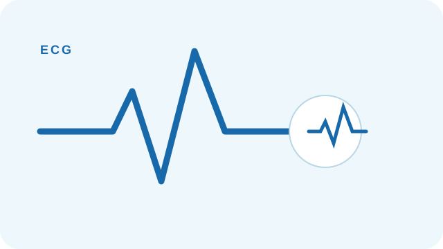
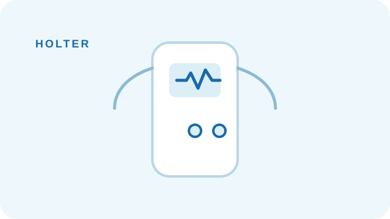
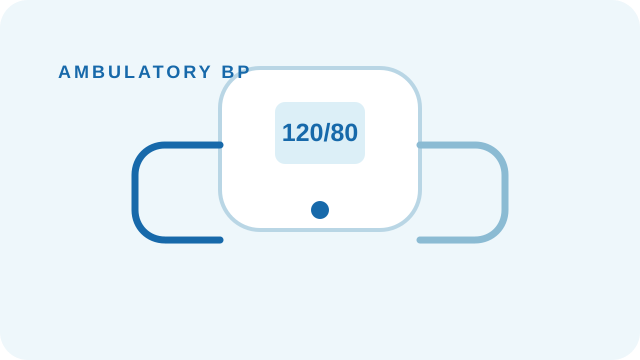

ECG
Electrocardiographic assessment to support cardiac evaluation.
Specialist cardiology consultation supported by focused cardiac assessment and monitoring services.

Electrocardiographic assessment to support cardiac evaluation.
Cardiac imaging used as part of specialist assessment.
Treadmill testing for appropriate cardiac evaluation.

Ambulatory rhythm monitoring over an extended period.

Out-of-clinic blood-pressure monitoring to support assessment.